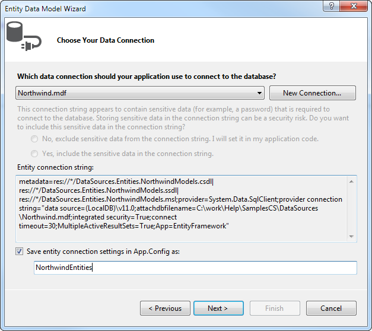

Binding to EntityFramework using Database first approach
This article demonstrates how to build a hierarchical Grid using Entity Framework and Database first approach.

Installing and Configuring Entity Framework
In order to download Entity Framework you can follow this MSDN article -
Get Entity Framework
. If you are using Visual Studio version below 2012 you may need to install the NuGet package manager -
Installing NuGet
After you have installed Entity Framework, follow these steps:
Right-click on your Project in Visual Studio and choose Add > New Item

Choose ADO.NET Entity Data Model

From the next window choose Generate From Database and Click next
Choose your database and click Next
From this final window select the needed tables and click Finish

Now our Models should be generated.
Configure RadGridView to work with EntityFramework
- Add RadGridView to the Form and then in the code behind add an instance of the DbContext which will provide us access to the data in the database
[C#]
NorthwindEntities dbContext = new NorthwindEntities();
[VB]
Dim dbContext As New NorthwindEntities
When binding RadGridView we will be using the Local property of DbSet. The Local property provides access to the data without a query being sent to the database. It is also in sync with the
DbSet. For example, if an entry is deleted from the Local property, the next time a query is executed it will be deleted from the database.
- Add the following code to your Form’s constructor:
[C#]
dbContext.Customers.Load();
this.radGridView1.DataSource = this.dbContext.Customers.Local.ToBindingList();
[VB]
dbContext.Customers.Load()
Me.radGridView1.DataSource = Me.dbContext.Customers.Local.ToBindingList()
These extension methods are located in the System.Data.Entity namespace. As the Local property represents the local data, we need to first Load the data from the Database. Then by calling
ToBindingList we make sure that our RadGridView and the Local data will be in sync.
When adding new rows in RadGridView by default the Id cell of the new rows will be 0 since the data was not send to the database, therefore no UniqueId has been assigned yet.
- Now we just need to add the the relation between the Customers and Orders tables:
[C#]
dbContext.Orders.Load();
GridViewTemplate template = new GridViewTemplate();
template.DataSource = dbContext.Orders.Local.ToBindingList();
this.radGridView1.MasterTemplate.Templates.Add(template);
GridViewRelation relation = new GridViewRelation(this.radGridView1.MasterTemplate);
relation.ChildTemplate = template;
relation.RelationName = "CustomersToOrders";
relation.ParentColumnNames.Add("CustomerId");
relation.ChildColumnNames.Add("CustomerId");
this.radGridView1.Relations.Add(relation);
[VB]
dbContext.Orders.Load()
Dim template As New GridViewTemplate()
template.DataSource = dbContext.Orders.Local.ToBindingList()
Me.radGridView1.MasterTemplate.Templates.Add(template)
Dim relation As New GridViewRelation(Me.radGridView1.MasterTemplate)
relation.ChildTemplate = template
relation.RelationName = "CustomersToOrders"
relation.ParentColumnNames.Add("CustomerId")
relation.ChildColumnNames.Add("CustomerId")
Me.radGridView1.Relations.Add(relation)
- The final step is to save the changes to the database when the form closes. For this purpose we need to subscribe to the FormClosing event of the Form and add the following code in the event handle:
[C#]
this.dbContext.SaveChanges();
[VB]
Me.dbContext.SaveChanges()
Now, if you run your application you should see the hierarchical data.